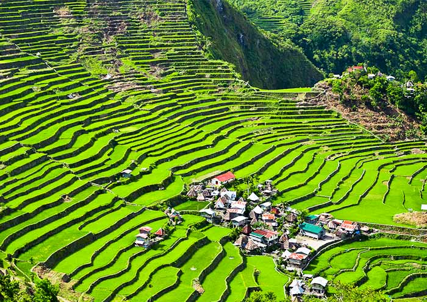

Marvel at the Banaue Rice Terraces
Experience the awe-inspiring Banaue Rice Terraces, often referred to as the "Eighth Wonder of the World." These terraces were hand-carved into the mountains of Ifugao over 2,000 years ago and offer breathtaking views of lush greenery and agricultural ingenuity.
What's Included:
- Transportation: Round-trip transfers from Manila to Banaue.
- Accommodation: 3 days and 2 nights at a cozy mountain lodge.
- Guided Tours: Explore the terraces with a knowledgeable local guide.
- Traditional Meals: Enjoy authentic Ifugao cuisine during your stay.
- Cultural Experience: Visit local villages and learn about Ifugao traditions and craftsmanship.
- Trekking: Hike through the terraces and surrounding areas for stunning views.

Top Activities in Banaue:
- Viewpoint Visits: Take in panoramic views of the terraces from the Banaue and Batad viewpoints.
- Village Tours: Visit local villages like Batad and Bangaan to experience the vibrant culture of the Ifugao people.
- Tappiya Falls: Trek to the majestic Tappiya Falls and cool off in its refreshing waters.
- Woodcarving: Witness traditional Ifugao woodcarving and craftsmanship firsthand.
- Photography: Capture the stunning landscapes that have captivated travelers for centuries.